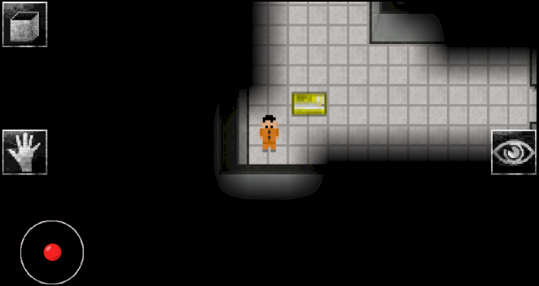

Nasz zespół
O nas
Jestem Leszek
O mnie
Zainteresowania:
- Nowe technologie
- Sztuczna inteligencja
- Programowanie gier
- Matematyka i fizyka
- Kalistenika i bieganie
- Szachy
Projekty:
- SCP: BLOCKTAINMENT BREACH

- Gra na Android

Do tworzenia tej gry podchodze już trzeci raz, gdyż za każdym razem projekt kończył się niepowodzeniem. Za pierwszym razem projekt przerwałem, gdyż nie poradziłem sobie z optymalizacją, za drugim uznałem, że kod jest nieczytelny. W trakcie tego nauczyłem sie sporo o OpenGL oraz o programowaniu na system Android.
Jestem Michał
O mnie
Zainteresowania:
- Programowanie
- Game design and development
- Fotografia
- Sztuki walki
- Filozofia i teologia
Projekty i inne:
- Game Jams
Hobbistycznie biorę udział w Game Jamach, zebraniach projektantów gier, których celem jest zaplanowanie i utworzenie gry komputerowej w jak najkrótszym czasie. Jedną z gier zrobionych przeze mnie podczas tych konkursów jest Pizzaliano Zadeemeri. link. Gra zostałą stworzona w 48 godzin, jestem autorem zarówno jej szaty graficznej jak i skryptów.
- Fotografia
Moim ulubionym zajęciem nie powiązanym z informatyką jest fotografia. Podczas zagranicznych podróży, a także zwiedzania rodzimych terenów lubię utrwalac częśc towarzyszących mi wspomnien w postaci zdjęc.
Jestem Michał
O mnie
Zainteresowania:
- Piłka nożna
- Historia II Wojny Światowej
- Filmy i seriale
- Szachy, dart i bilard
- Motoryzacja
- Kosmologia
- Piłka nożna
Jako fan piłki nożnej, kibicuję swoim ulubionym zespołom. Jednym z nich jest Borrusia Dortmund, której kibicowałem w Superpucharze Niemiec w 2019 roku na stadionie Signal Iduna Park.
- Sport
Jako fan sportu i rywalizacji, biorę udział w wielu wydarzeniach sportowych. Na zdjęciu widzimy wygraną drużynę piłki ręcznej z zawodów licealnych.